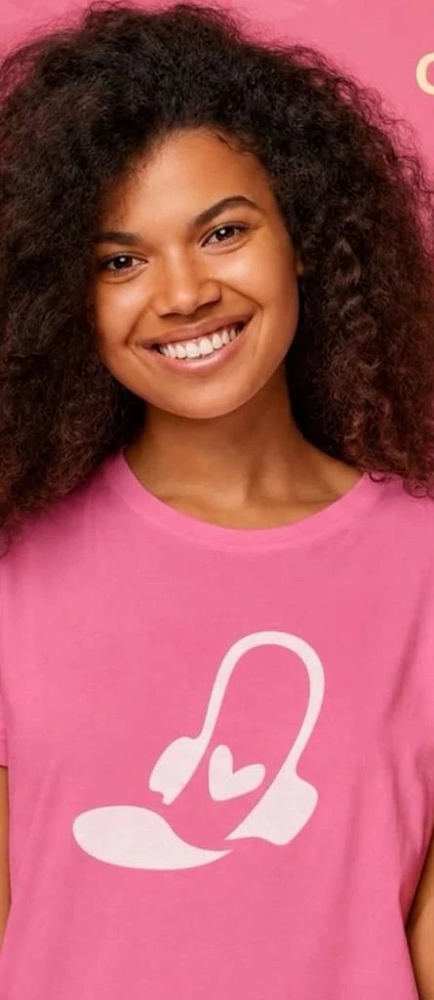
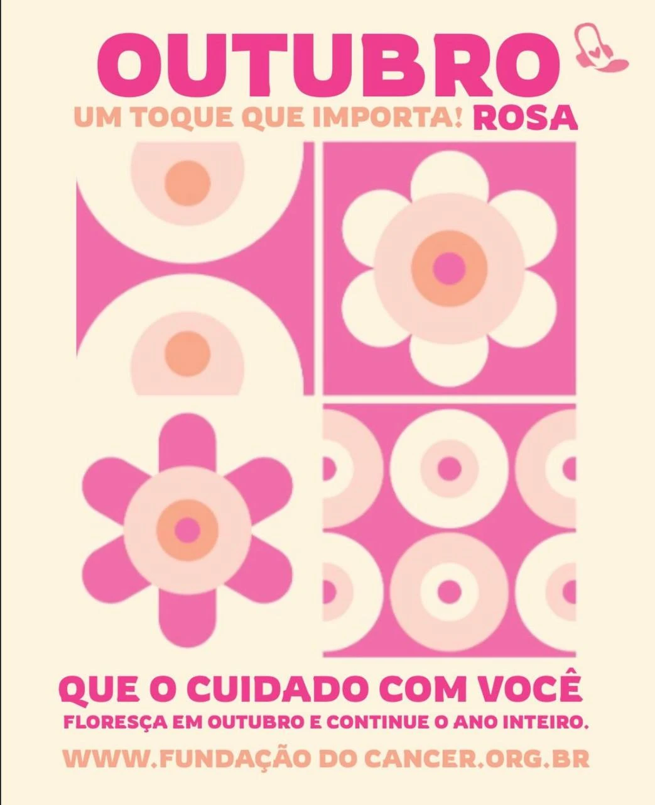

01
CUIDADO ♥
Mobilização e doações
Incentivamos a arrecadação de absorventes e o apoio de quem deseja contribuir com a causa.
O cuidado não pode ser um privilégio. Somos uma iniciativa de Recife que une informação, acolhimento e solidariedade no enfrentamento à pobreza menstrual.

O Absorvendo Amor — Clube Recife atua pela dignidade menstrual, aproximando pessoas que querem ajudar de uma causa que precisa ser vista e discutida.
Por meio da mobilização social, do diálogo e da arrecadação de absorventes, buscamos contribuir para que mais pessoas tenham acesso à informação e a cuidados básicos durante o período menstrual.
Nossa história completa e a apresentação da equipe serão ampliadas com os materiais oficiais do projeto.
Não existe uma única forma de transformar realidades. Cada ação importa.
Incentivamos a arrecadação de absorventes e o apoio de quem deseja contribuir com a causa.
Promovemos conversas sobre saúde, higiene menstrual, acesso à informação e dignidade.
Buscamos conhecer de perto as necessidades das comunidades e construir caminhos de apoio.
Apoiar a dignidade menstrual pode começar com algo simples: uma doação, uma conversa ou o compartilhamento da nossa causa.
Separe absorventes novos e lacrados.
Consulte a equipe para combinar a forma de entrega.
Compartilhe a campanha com outras pessoas.
O Pix oficial ainda não foi informado. Nunca transfira valores para chaves não confirmadas pela ONG.
Encontre aqui os pontos de coleta, os horários de funcionamento e o que pode ser entregue em cada local. Os dados são publicados após confirmação pela equipe.
Fale com a equipeOs endereços e horários oficiais serão publicados aqui assim que forem confirmados. Até lá, consulte nossos canais de contato.
Materiais de conscientização e registros compartilhados pelo Clube Recife.

Em breve, esta galeria receberá mais fotografias originais das ações, com as autorizações necessárias.
Ver nosso InstagramQueremos compartilhar os resultados das ações e a destinação das doações com responsabilidade. Publicaremos somente dados verificados pela ONG.
Dados em preparação
Dados em preparação
Publicação em breve
Estamos preparando um espaço para reunir vídeos das ações, encontros e iniciativas do projeto. Por enquanto, você pode acompanhar as novidades pelo Instagram.
Reunimos algumas respostas úteis. Se ainda precisar de ajuda, nossa equipe pode orientar pelos canais oficiais.
É a dificuldade de acessar produtos, informação e condições adequadas de higiene e saúde durante a menstruação. Ela também envolve barreiras sociais e econômicas.
O projeto divulga a arrecadação de absorventes novos e lacrados. Para outros produtos, consulte a equipe antes de entregar.
Os pontos de coleta serão disponibilizados na seção correspondente quando endereço e horários forem confirmados.
Uma chave Pix ainda não foi informada neste site. Não faça transferências sem confirmar os dados nos canais oficiais do projeto.
Você pode acompanhar o Instagram oficial e compartilhar as campanhas com outras pessoas. Toda divulgação responsável ajuda a ampliar o alcance da causa.
Quer doar, apoiar uma campanha ou esclarecer alguma dúvida? Entre em contato pelos canais da ONG.